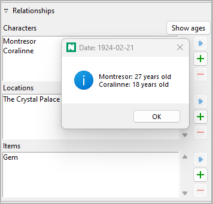
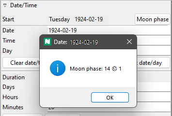
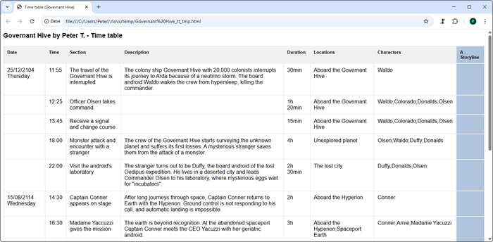

Story time
If date and time are of importance in the novel, novelibre offers a variety of support for this. If you set up your writing project carefully, you will have useful information at your disposal when writing, from the current day of the week and the phase of the moon to the ages of the characters involved.
You can assign a date, a time, and a duration to each section. The date may be unspecific or specific, where unspecific means the number of days since the start of the story. According to this count, the story begins on day zero. For the specific date, novelibre uses the Gregorian calendar. You can only enter positive dates with years between 0001 and 9999.
The names of weekdays and months are given to novelibre by the operating system, so the system language is used. By default, dates are output as is usual in the system language. If you do not like this, you can change a Setting to display the date in ISO format, just as you enter it.
Date and time specifications are optional; you can assign each section either a specific date, an unspecific date or no date at all. novelibre can convert specific dates into unspecific ones and vice versa, if you enter a reference date for the day zero in the book properties. Even if you don’t need specific dates for your story, specifying a reference date might be helpful. Thus, a day of the week can be displayed, and ages can be calculated for related characters.
You can also have the moon phase displayed, which is calculated fairly accurately, at least for the 20th and 21st centuries.
By default, you type date, time, and duration in the corresponding entry fields of the Section properties. If the previous section already has a date and time, you can have novelibre generate a start date and time witht the click of a button, so that the action of the section immediately follows the action of the previous section. If the subsequent section has a date and time, you can have novelibre automatically generate a duration so that the subsequent section follows on seamlessly from the current one.
Even more convenient is the use of dedicated timeline software such as the free Timeline or the commercial Aeon Timeline 2. This allows you to treat sections like events and arrange, move, lengthen and shorten them on a timeline. There are plugins for the two software applications mentioned above, which can synchronize the timelines with novelibre, create new timelines, and create new novel projects from existing timelines.
If you do not want to use a timeline software, the nv_tlview plugin provides a graphical timeline display for the sections with date and time.
You can also display dated sections in a time table which includes the plot lines.
